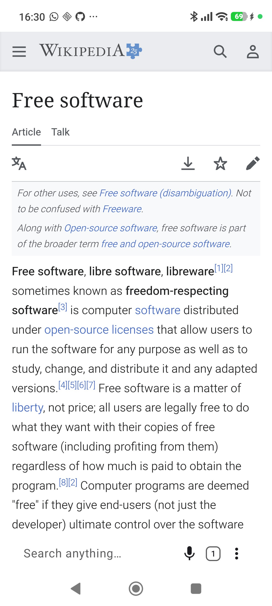
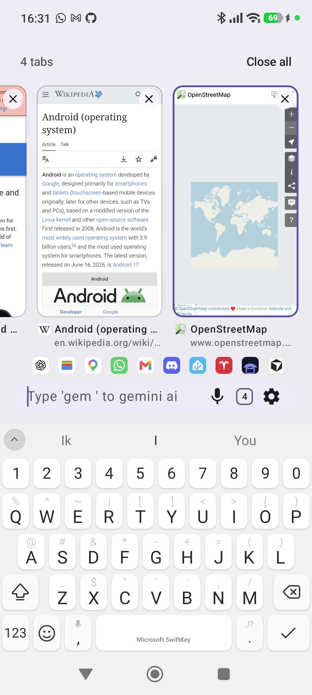
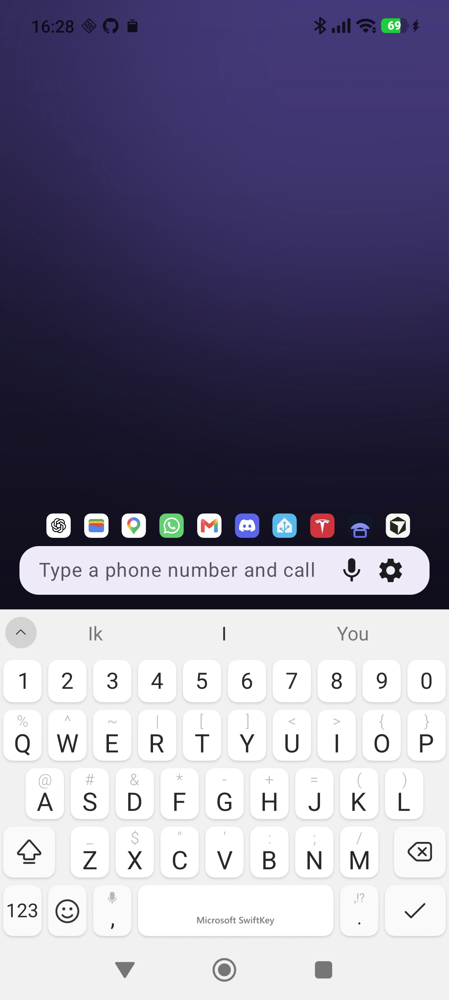
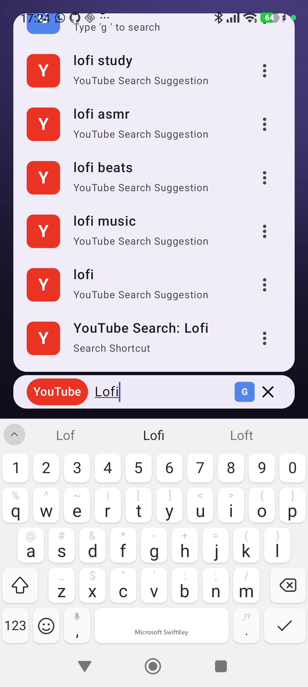
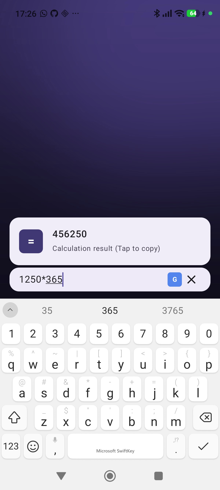
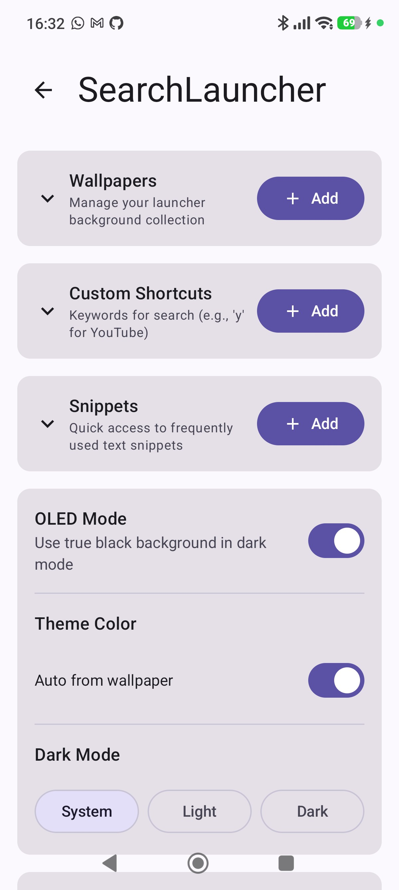

SearchLauncher
Your homescreen has a keyboard.
Type to launch apps, call contacts, run shortcuts, or open the web from one always-ready bar.



Finally, a launcher for people who type faster than they swipe. A command palette for your pocket.
Search
If it’s on your phone, type it.
Fuzzy search across apps, shortcuts, contacts, and settings. Ranking learns what you pick, so the next time is faster.
- Apps and app shortcuts
- Contacts: call, text, email, WhatsApp, Signal, Telegram, and more
- System settings and actions: flashlight, dark mode, rotation lock, battery saver…
- Voice search when your hands are full
Commands
Aliases for how you actually work.
Built-in shortcuts like y for YouTube, g for Google, c for ChatGPT, m for Maps, or invent your own. Save snippets and copy them from the same bar.

Smart input
The bar knows what you meant.
Paste a number, email, URL, or equation. SearchLauncher offers the right action: call, text, email, open, or copy the answer.

Browser
Browse from the same bar.
Web results open in SearchLauncher’s built-in browser. Ads and trackers blocked by default. Tabs live under your thumb: swipe the search bar sideways to switch, or up for live previews. From the home screen too.
- Ad & tracker blocking on by default
- Private browsing in an isolated process with no history written
- Bookmarks and searchable history, with site icons
- Optional: set as your default browser
Home
Reclaim the screen.
When you’re not searching, the UI steps aside. Swipe a wallpaper album, host widgets, keep favorites and recents above the bar.
- Swipe wallpapers; theme colors pulled from your background
- Widgets you can resize, reorder, and hide with a tap on the background
- Favorites you pin; history that follows how you work
- Gestures for notifications, quick settings, and the app drawer
- OLED true-black when you want it

Your way
Full launcher, or just the search bar.
Set SearchLauncher as default, or keep your current launcher and add the widget. Same power either way. Export and import a backup when you switch phones.
Privacy
Open by design. Yours stays yours.
Indexing and ranking run on your device. There is no SearchLauncher cloud for your queries. Free, MIT-licensed, auditable on GitHub.
- On-device AppSearch index: your catalog never phones home
- Web searches go straight to the provider you chose
- Suggestions and crash reports are optional
- In-browser ads and trackers blocked by default
- MIT-licensed source on GitHub
Stop scrolling. Start executing.
Free on GitHub. Android 10 or newer.